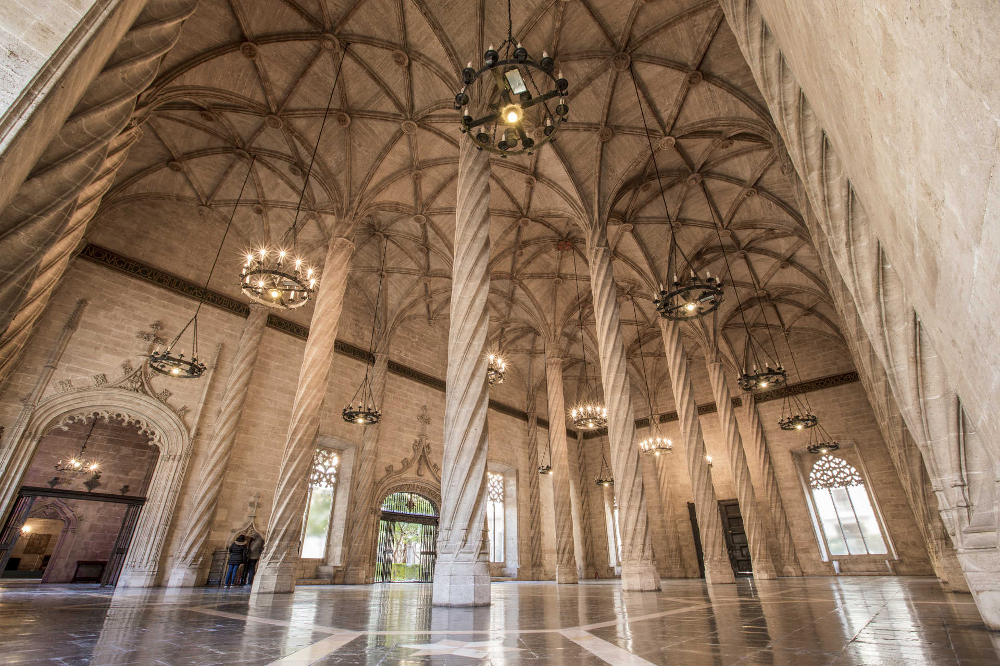

La Lonja de la Seda
Edificio gótico del siglo XV, declarado Patrimonio de la Humanidad por la UNESCO; símbolo del pasado comercial de Valencia.
Descubre las rutas naturales de Valencia a través de nuestra guía interactiva, diseñada para promover un turismo sostenible que integra naturaleza, cultura y ocio responsable.
Edificio gótico del siglo XV, declarado Patrimonio de la Humanidad por la UNESCO; símbolo del pasado comercial de Valencia.
Parque histórico con amplias avenidas arboladas, eventos y zonas de paseo; popular entre locales para correr y relajarse.
Playa junto a la Dehesa y la Albufera, con amplias dunas naturales y un ambiente más tranquilo y natural.
Uno de los mercados de abastos más grandes de Europa, famoso por su arquitectura modernista y productos frescos.

Amplia playa urbana con paseo marítimo, chiringuitos y buen acceso desde la ciudad; lugar emblemático de Valencia.
Plaza histórica junto a la Catedral y el Miguelete, epicentro de celebraciones y punto de encuentro en el casco antiguo.
Jardín neoclásico del siglo XIX, conocido por sus estanques, esculturas y diseño formal; declarado Bien de Interés Cultural.
Playa extensa y conectada con La Malvarrosa; conocida por su paseo, restaurantes y actividades de temporada.
Antiguo cauce del río Turia transformado en un largo jardín urbano con áreas verdes, puentes y equipamientos para el ocio.